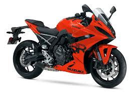
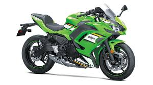
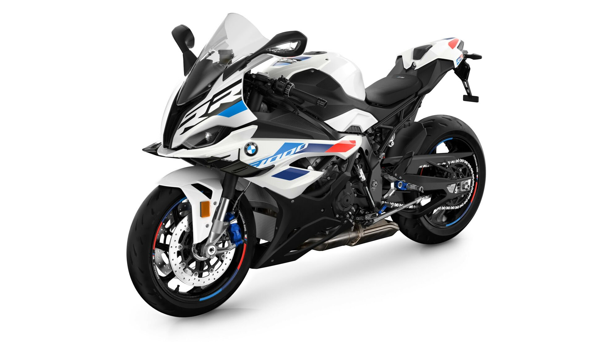
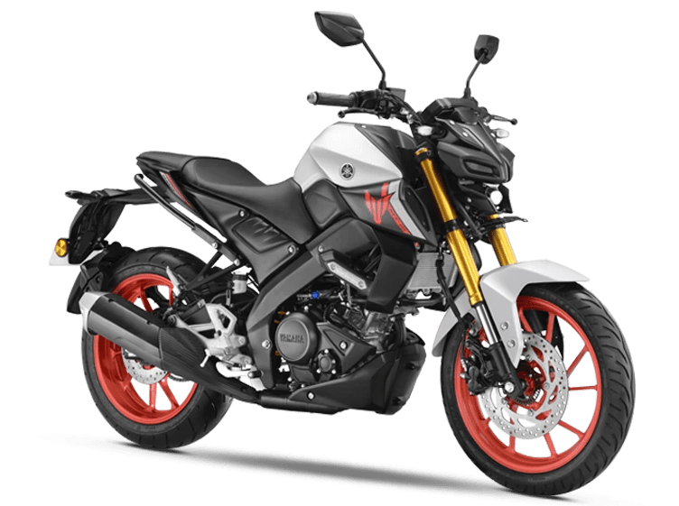

მოტოციკლები
ჩვენს კატალოგში წარმოდგენილია მსოფლიოში ცნობილი ბრენდები, როგორიცაა Yamaha, Honda, Kawasaki, BMW და Suzuki. თითოეული მოტოციკლი გამოირჩევა გამძლეობით, სიმძლავრითა და თანამედროვე დიზაინით, რათა მოგცეთ საუკეთესო გამოცდილება გზაზე.

Suzuki არის იაპონური ბრენდი, რომელიც ცნობილია სანდოობითა და მაღალი ხარისხით. მისი მოტოციკლები გამოირჩევა ძლიერი ძრავით, სტაბილური მართვით და სპორტული დიზაინით.

Kawasaki ცნობილია თავისი სიჩქარითა და სპორტული სტილით. მისი მოტოციკლები განკუთვნილია მათთვის, ვინც სურს ძლიერი შესრულება და ადრენალინის მაქსიმალური დოზა გზაზე.

Honda ცნობილია საიმედოობითა და კომფორტით. მისი მოტოციკლები გამოირჩევა დაბალი საწვავის ხარჯით, მარტივი მართვით და გამორჩეული იაპონური ხარისხით.

BMW ქმნის პრემიუმ კლასის მოტოციკლებს, რომლებიც აერთიანებს ძლიერ ძრავს, თანამედროვე ტექნოლოგიებსა და ელეგანტურ დიზაინს. იდეალურია მოგზაურობისა და გრძელგზიანი ტარებისთვის.

Yamaha არის ერთ-ერთი ყველაზე ცნობილი მოტოციკლების ბრენდი, რომელიც გამოირჩევა ინოვაციური ტექნოლოგიებითა და გამძლეობით. მისი მოდელები იდეალურია როგორც დასაწყისისთვის, ისე პროფესიონალებისთვის.